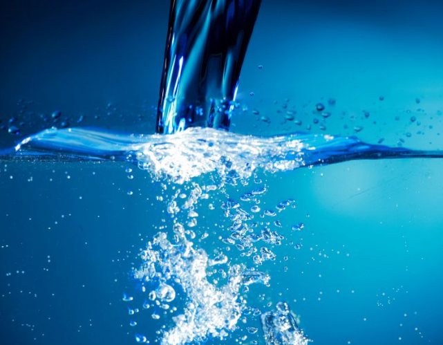

Pe parcursul celor 90 de zile de dieta, veti avea 3 (trei) ZILE DE APA. Dupa fiecare 28 de zile (mai exact dupa 7 ture PACV) veti avea o ZI DE APA in care veti consuma doar plata toata ziua.
Sunt permise de asemenea cafeaua si ceaiurile

ZILELE DE APA SUNT: 29; 58; 87.
Zilele urmeaza intotdeauna dupa o zi de vitamine!